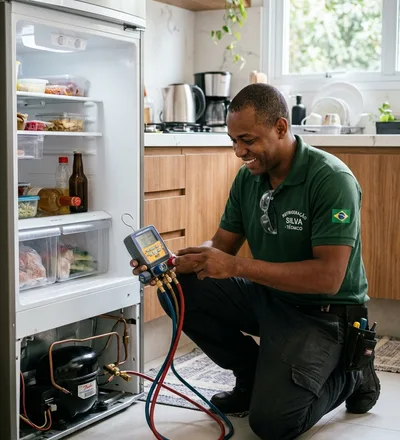

Conserto de Geladeira
Avaliação e reparo de geladeiras convencionais e frost free em Santa Luzia com foco em diagnóstico preciso no domicílio.
Diagnóstico técnico presencial, manutenção preventiva e corretiva, limpeza de sistemas e conserto de equipamentos de refrigeração residenciais e comerciais em Santa Luzia.

Equipamentos de refrigeração desempenham papel essencial na conservação de alimentos em casa e na continuidade das vendas em padarias, açougues, restaurantes, mercados e distribuidoras de Santa Luzia. Quando surgem oscilações de temperatura, ruídos incomuns, bloqueio por gelo ou vazamentos de água, uma inspeção técnica objetiva identifica o defeito real sem substituições desnecessárias.
Nosso atendimento contempla avaliação elétrica, verificação do sistema de ventilação e degelo, higienização de condensadores, ajustes em controladores digitais e reparos no circuito frigorífico. Antes de qualquer execução, o responsável pelo equipamento recebe um orçamento transparente explicando o serviço indicado.
Selecione o tipo de equipamento para conferir os principais sintomas avaliados e solicitar atendimento específico.
Avaliação e reparo de geladeiras convencionais e frost free em Santa Luzia com foco em diagnóstico preciso no domicílio.
Assistência técnica para freezers horizontais e verticais usados em residências, açougues, padarias e comércios de Santa Luzia.
Reparo e revisão técnica para frigobares utilizados em residências, áreas gourmet, clínicas e escritórios de Santa Luzia.
Revisão de controladores digitais, ventilação forçada e sistema frigorífico de cervejeiras residenciais e comerciais em Santa Luzia.
Assistência técnica para expositores verticais de bebidas e laticínios em estabelecimentos comerciais de Santa Luzia.
Suporte técnico para câmaras frias de resfriados e congelados em Santa Luzia, com verificação de comandos elétricos, degelo e ciclo frigorífico.
Reparo e revisão preventiva de balcões frigoríficos e pistas frias para manter alimentos conservados durante todo o expediente em Santa Luzia.
Soluções técnicas para instalação, prevenção de falhas e correção de problemas em sistemas refrigerados.
Avaliação técnica presencial em Santa Luzia para identificar a causa real de falhas térmicas, elétricas ou mecânicas em equipamentos de refrigeração.
Atendimento técnico organizado para resolver falhas de funcionamento, perda de rendimento térmico e desgaste de componentes em equipamentos refrigerados.
Revisão completa de sistemas de refrigeração domésticos e comerciais para garantir estabilidade térmica e economia de energia.
Reparo técnico objetivo para equipamentos que deixaram de resfriar, vazam água ou apresentam falhas elétricas em Santa Luzia.
Suporte técnico na instalação e comissionamento de freezers, expositores, balcões refrigerados, cervejeiras e câmaras frias em Santa Luzia.
Higienização técnica de serpentinas, ventiladores e linhas de drenagem para melhorar a troca de calor e reduzir o esforço do motor.
Inspeções programadas em Santa Luzia para manter equipamentos refrigerados operando com temperatura estável e menor risco de panes.
Intervenção técnica direcionada para restabelecer equipamentos de refrigeração que apresentaram falha súbita em Santa Luzia.
Acesse a página dedicada ao seu bairro para conferir detalhes de atendimento local e solicitar visita técnica.
Processo simples e direto do primeiro contato até a conclusão do serviço no equipamento.
Você envia uma mensagem pelo WhatsApp ou preenche o formulário informando o bairro em Santa Luzia e o sintoma do aparelho.
O equipamento é examinado no local com instrumentos de medição elétrica e térmica para identificar a causa exata da falha.
Antes de iniciar qualquer reparo, explicamos o diagnóstico encontrado e apresentamos o valor completo para sua aprovação.
Após aprovação, executamos o serviço técnico e conferimos o ciclo de funcionamento e a estabilização da temperatura.
Respostas diretas sobre atendimentos residenciais, equipamentos comerciais e manutenção.
Atendemos geladeiras residenciais (convencionais e frost free), freezers verticais e horizontais, frigobares, cervejeiras, expositores refrigerados, balcões refrigerados e câmaras frias comerciais de resfriados ou congelados, avaliando cada modelo e marca conforme disponibilidade técnica.
Você pode solicitar contato pelo botão de WhatsApp ou preencher o formulário com seu bairro e descrição do problema. Após a inspeção técnica no equipamento, apresentamos o diagnóstico e o valor detalhado para sua aprovação antes de executar o serviço.
Sim. Realizamos visitas técnicas em casas e apartamentos — em bairros como São Benedito, Palmital, Cristina, Baronesa e Belo Vale — e também em padarias, açougues, mercados, restaurantes e empresas na região da Frimisa e Industrial Americano.
A manutenção preventiva é indicada antes que o equipamento apresente perda de frio ou sobrecarga elétrica. Limpeza periódica de condensadores, conferência de comandos e revisão da vedação ajudam a preservar estoques e evitar paradas inesperadas.
Nem sempre. Em muitos casos de geladeira frost free que não gela embaixo, a causa está na resistência de degelo, sensor de temperatura, fusível térmico ou motoventilador interno. O diagnóstico elétrico confirma o componente exato antes de qualquer troca.
Preencha os dados do equipamento e do bairro em Santa Luzia ou fale diretamente pelo WhatsApp.